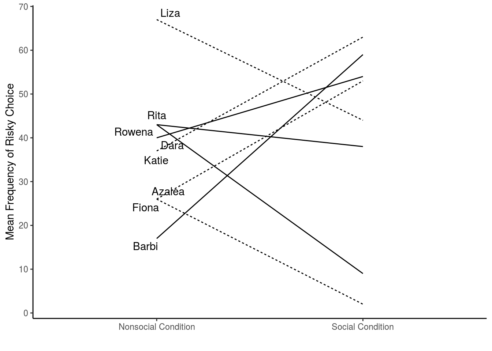

#loading library to enable visualization of ggplot function use
library(ggplot2)
library(ggrepel)names<-rep(c("Dara","Rita","Liza", "Azalea", "Barbi","Rowena","Katie","Fiona"), each=2)
lnames<-c("","Dara","","Rita","","Liza", "","Azalea", "","Barbi","","Rowena","","Katie","","Fiona")
mean_frequency<-rnorm(16,45,25)
condition<-rep(c("Social Condition","Nonsocial Condition"),8)
adversity<-rep(c("Adverse","Not_Adverse"),times=c(4,4))
plot_df<-data.frame(names,mean_frequency,adversity,condition)
#print(plot_df)
ggplot(plot_df, aes(condition,mean_frequency,group=names,linetype=adversity))+geom_line()+geom_text_repel(label=lnames, position = "nudge")+theme_classic()names<-rep(c("Dara","Rita","Liza", "Azalea", "Barbi","Rowena","Katie","Fiona"), each=2)
lnames<-c("","Dara","","Rita","","Liza", "","Azalea", "","Barbi","","Rowena","","Katie","","Fiona")
mean_frequency<-rnorm(16,45,25)
condition<-rep(c("Social Condition","Nonsocial Condition"),8)
adversity<-rep(c("Adverse","Not_Adverse"),times=c(4,4))
plot_df<-data.frame(names,mean_frequency,adversity,condition)
#print(plot_df)
ggplot(plot_df, aes(condition,mean_frequency,group=names,linetype=adversity))+geom_line()+geom_text_repel(label=lnames, position = "nudge")+theme_classic()